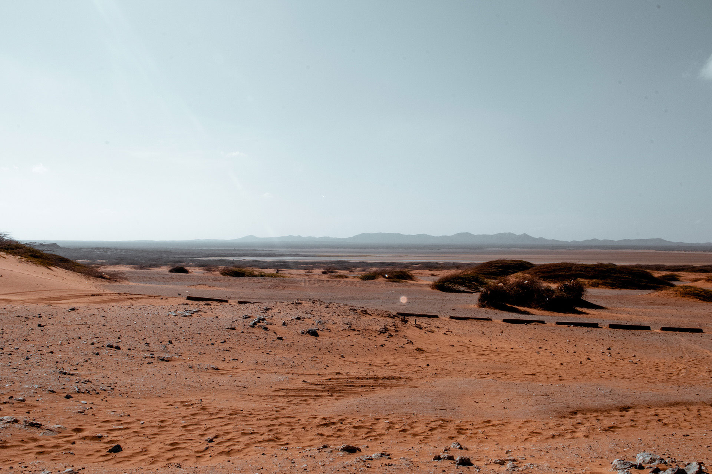

Il suolo è base e sostegno di ogni cosa: una superficie che, immagazzinando e rilasciando carbonio, respira per restare in vita, mantenendo l’equilibrio di tutto l’ecosistema. Fattori come urbanizzazione, disboscamento e agricolture intensive hanno iniziato a soffocare il terreno, impedendogli di assorbire carbonio. Nel 2050 accade infatti ciò che si è sempre temuto: viene ufficialmente dichiarata la morte del suolo, completamente arido, non più in grado di far nascere vita, perlomeno in autonomia.
